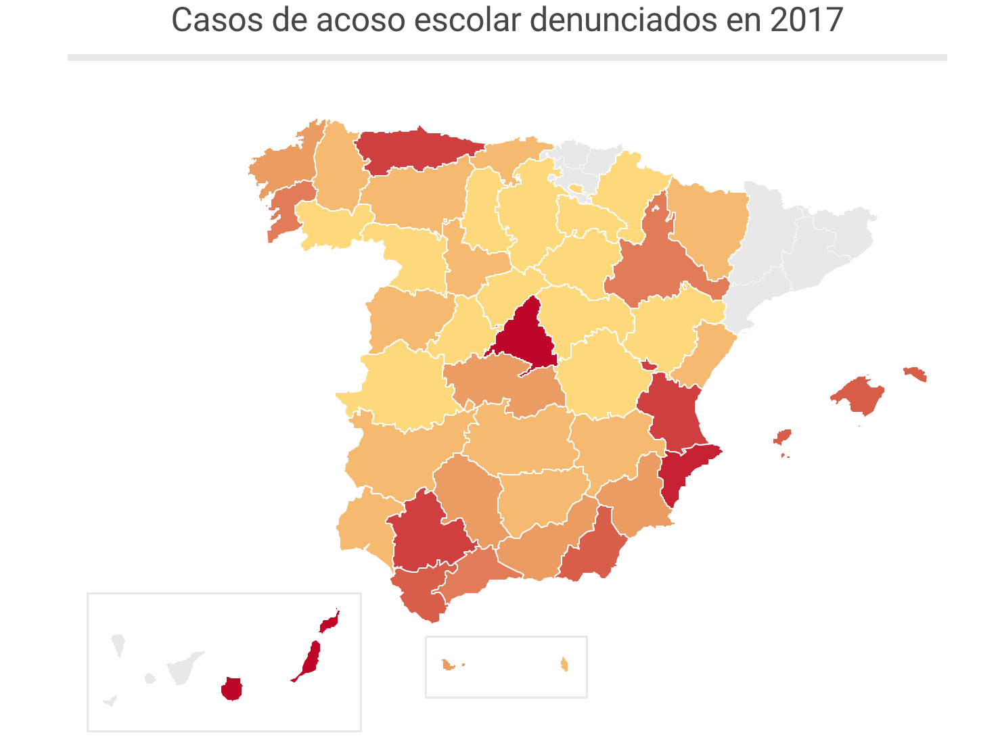

Gráficos sobre el acoso escolar en España
El cyberbullying se conoce como el ejercicio que se ejerce a través de la redes y/o medios telemáticos (Internet, videojuegos y redes sociales) para acosar psicológicamente a individuos.
El problema del ciberacoso es una problemática que ha generado numerosos problemas en la sociedad sobre todo entre los más jóvenes. El anonimato es uno de los factores que más daño causan
Al menos el 6,9% de los estudiantes españoles han sufrido ciberacoso. Además está relacionado muy de cerca con la edad de los usuarios, donde los menores de edad son los más afectados por este acoso que se desarrolla mayormente en las redes sociales y conforme entran en la adolescencia de vuelve más hábito.Además, son el sexo femenino las que declaran haber vivido más de cerca el ciberacoso.
Estas gráficas nos visualizan los datos de esta problemática del buylling el cual nos deja 1.054 casos de acoso escolar denunciados en 2017 en España. Según datos Cuerpo Nacional de Policía, Guardia Civil y cuerpos de Policía Local, lo que implica una variación de un 11,65% respecto al año inmediatamente anterior.
Llamadas atentidas por acoso escolar
Las gráficas que se encuentran durante el reportaje son principalmenteenfocadas a las llamadas atentidas por acoso escoclar sacando los datos principales del Ministerio de de Educación. El teléfono contra el acoso escolar recibió 12.799 llamadas entre noviembre de 2017 octubre de 2018, la mitad que el año anterior. La tipografía utilizada en estas gráficas del estudio son totalmente acertadas, fáciles de entender, totalmente reproducibles y sencillas. Los colores son variables pero siempre bien utilizados y los tipos de gráfica en su mayoría son de barras y mapas -en casos especiales- para hablar de casos del acoso escolar por provincias. Además la funcionalidad es correcta dado que tanto las descargas de las imágenes como de los datos junto al código de inserción vienen totalmente indicados debajo de cada una de ellas y son accesibles.
El texto que acompaña a la imagen la complementa, pero sin embargo una vez que les el título de la gráfica y ves esta junto a sus indicaciones no hace falta leer el texto más que para completar con más información. Está muy clara y explicada en la representación, lo que las hace ser unas buenas gráficas.
Las escalas de colores en esta temática tampoco son muy necesariasl. Esta indicación si lo es en otros casos como política o naturaleza, ya que tienen colores designados mentalmente por los humanos y muy asociados a algo para su fácil entendimiento. Sin embargo, como se menciona anteriormente su uso es adecuado y cuidado. La narrativa visual y su relación con la narrativa textual es algo básica pero entendible, y eso es lo que principalmente importa al usuario a la hora de poder contextualizar, entender y comprehender el texto y la información que se le está aportando.
Otros elementos que se utilizan son enlaces a otros links que añaden más información y la composición es muy fácil de seguir debido a la sencillez de la elaboración. Unas gráficas y un estudio muy útil y básico con gráficos vectoriales de calidad.
